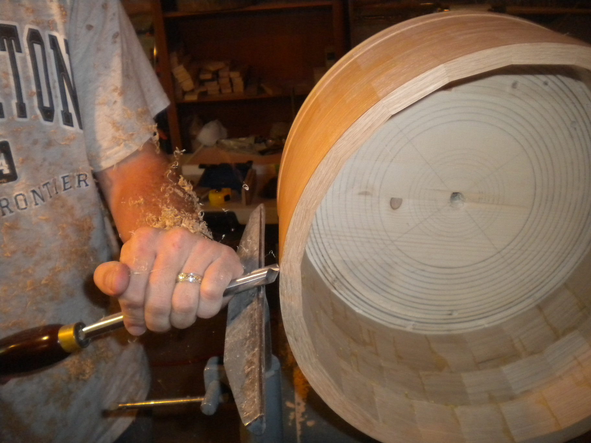
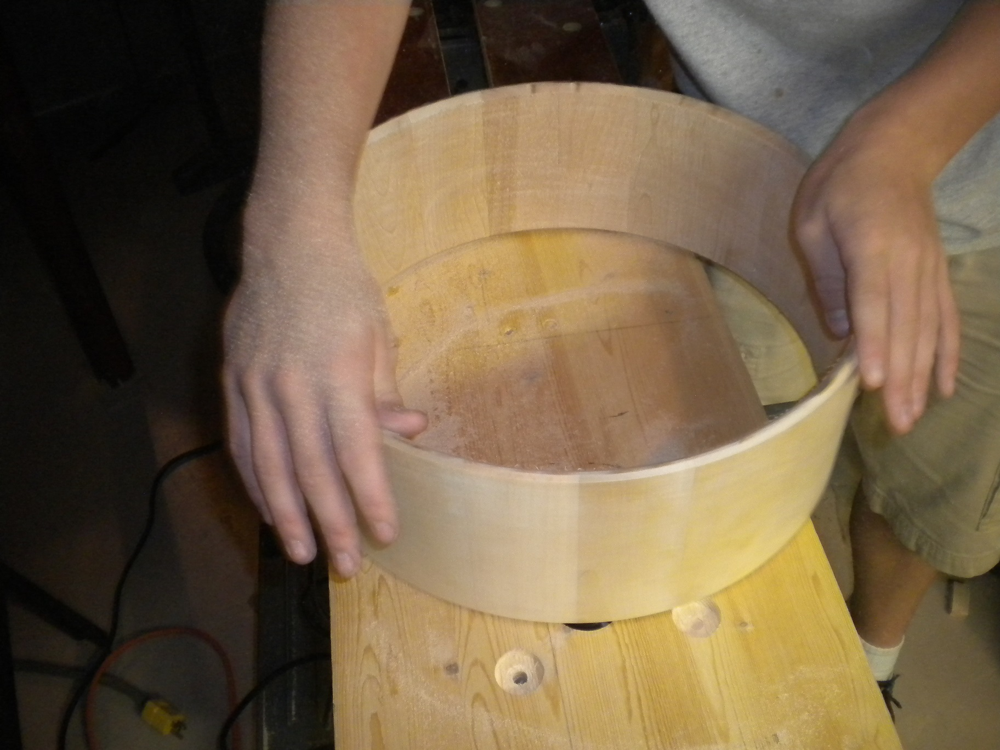
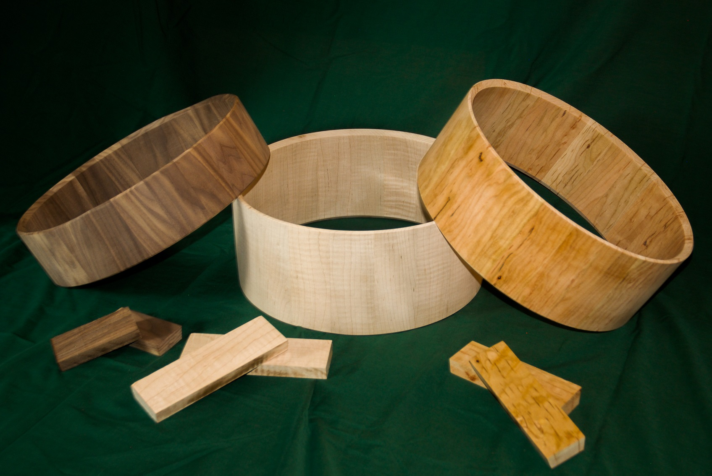

The Snare Essentials
Based in Georgina, Ontario, Kava Custom Drums has been producing high quality snare drums since its inception in 2015. Kava began as a simple project, became a passion and transformed into a thriving company within a year. Whether it is a finished drum you are seeking or a finished or even unfinished shell for a project of your own, we are confident that you will be very happy with the results of our product.
Kava’s founder, John Kaminsky is a professional classical and jazz musician and a high school music teacher by trade whose passion for woodworking and instrument making (not to mention music) lead to the founding of the company. Kava’s employees are also active members of the musical community and bring a wealth of knowledge to the company. Years of careful study in the field of musical instrument construction and design is the inspiration behind each and every instrument that Kava produces. Only choice woods (both exotic and domestic), quality hardware and the finest craftsmanship will suffice with a Kava product.
Our drum shells are hand milled on a lathe and finished in such a way as to bring out the full lustre and beauty of the wood’s grain.
 Woodgrain is as unique as a fingerprint; each and every segment of wood provides a unique signature and thus a unique character for each drum shell we produce.
Take the time to browse and feel free to ask any questions you may have. Thanks for stopping by!
Construction
Our drums are made from hand selected and hand finished hardwoods of various species. Stave drums are constructed in much the same manner as a barrel; from individual staves arranged radially and milled to form a round shell. It is our opinion that the vertical grain provides a better pathway for the transmission of vibration from the batter to the resonator. All science and opinion aside, anyone with an eye for the sheer beauty of finished wood would agree that stave drums just look amazing.
